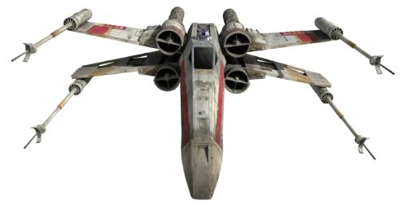

<section>
    <div class="card" style="width: 18rem;">
        
        <div class="card-body">
          <h5 class="card-title">X-wing</h5>
          <p class="card-text">El X-wing es un tipo de caza estelar del universo ficticio de Star Wars. Hace referencia a una serie de cazas diseñados y producidos por la empresa Incom Corporation como los principales interceptores de superioridad espacial, apoyo aéreo cercano y lucha de caza, cuya principal característica es la forma en X de sus cuatro alas. En un principio, fueron diseñados para el Imperio Galáctico, pero cuando el equipo de ingenieros completo desertó y se incorporó a la Alianza Rebelde, se llevaron consigo los planos y prototipos, siendo usados por estos.
        </p>
          <a href="http://www.starwars.com" target="blank" class="btn btn-primary">Go Star Wars page</a>
        </div>
      </div>
</section>